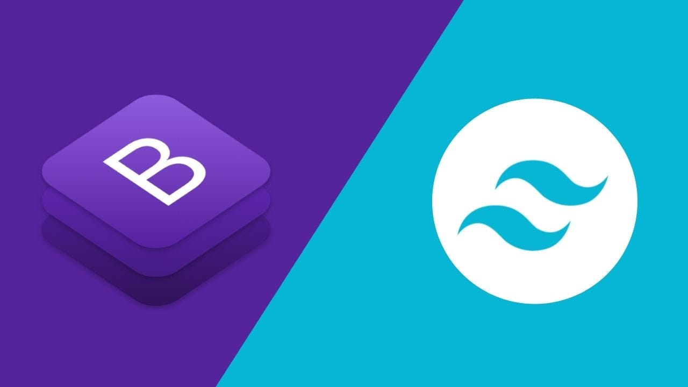
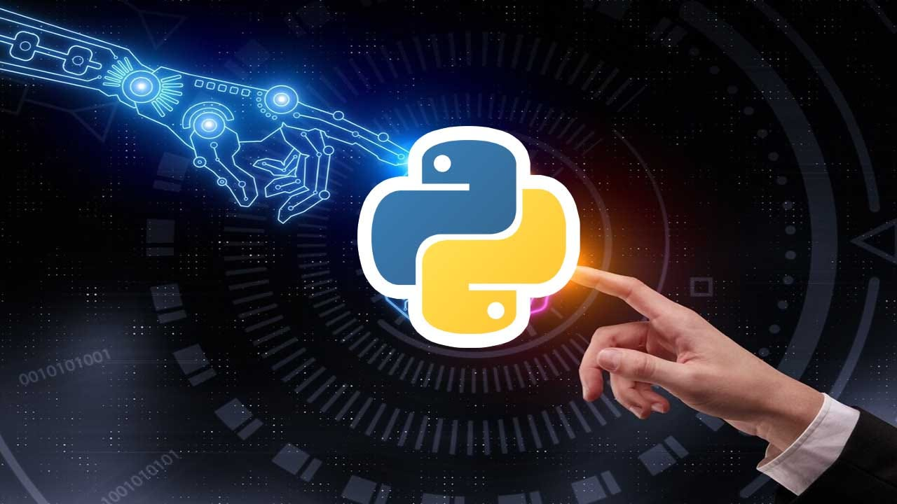
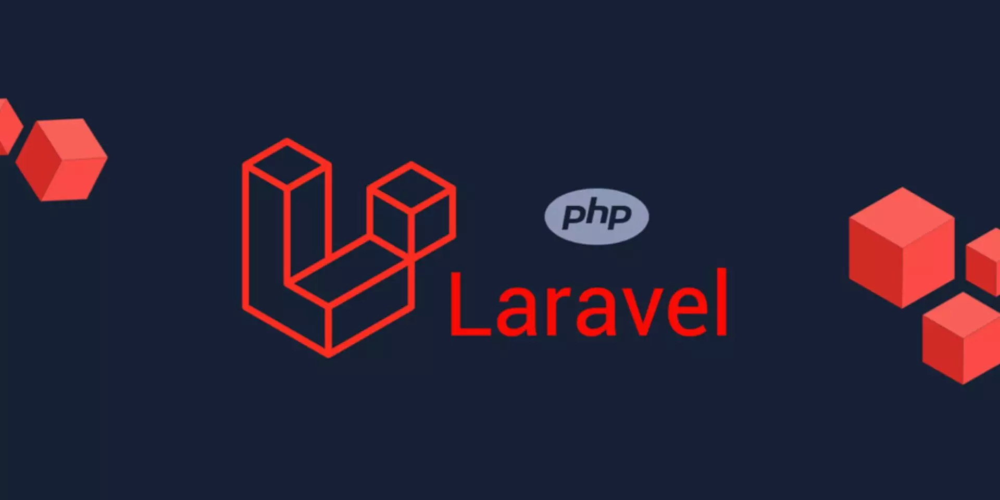
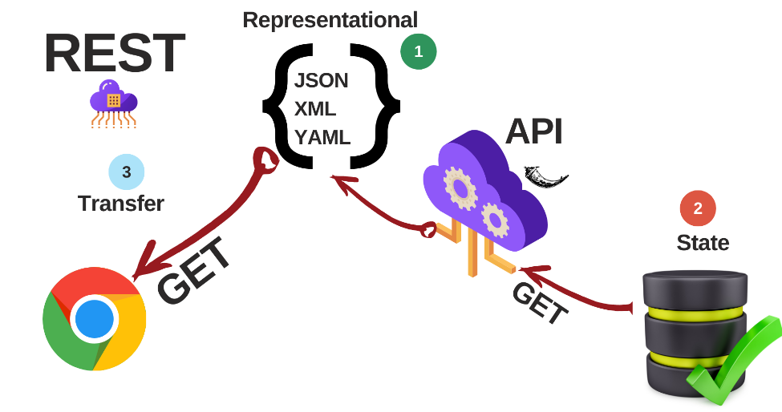
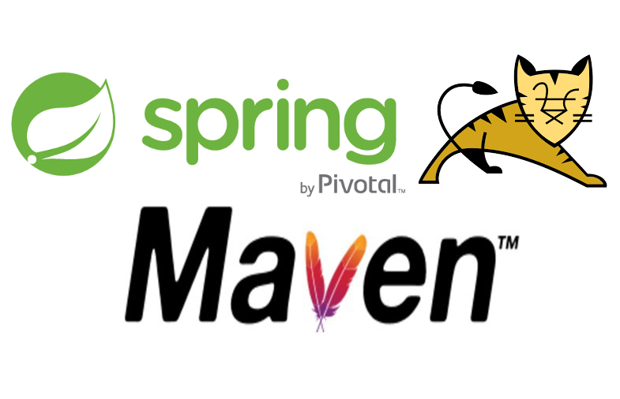

Blog de Desarrollo
Reflexiones, aprendizajes y experiencias en mi recorrido como desarrollador web
Mi Transformación: De Principiante a Desarrollador Full Stack
Hace 15 semanas comencé este viaje sin saber prácticamente nada sobre desarrollo web. Hoy, al mirar atrás, puedo ver una transformación completa en mi forma de pensar y resolver problemas.
Los primeros pasos fueron fundamentales: Entender HTML y CSS no era solo aprender etiquetas y propiedades, sino comprender cómo estructurar información y crear experiencias visuales coherentes.
El momento decisivo llegó con JavaScript y React. Pasar de páginas estáticas a aplicaciones interactivas cambió completamente mi perspectiva sobre lo que es posible crear en la web.
"El desarrollo web no es solo código, es resolver problemas reales de personas reales"
Ahora, con conocimientos en backend (Spring, Laravel, Flask) y frontend (React, TypeScript), me siento preparado para enfrentar proyectos complejos y crear soluciones completas.
React Hooks: El Antes y Después en mi Código
Los React Hooks revolucionaron mi forma de escribir componentes. Aquí comparto las lecciones más importantes que aprendí.
useState: Gestión de Estado Simplificada
// Antes: Componentes de clase complejos
// Después: Funciones simples y elegantes
const [count, setCount] = useState(0);
const [user, setUser] = useState(null);useEffect: El Ciclo de Vida Reimaginado
Entender useEffect fue clave para manejar efectos secundarios de manera predecible:
- Montaje: useEffect(() => {}, [])
- Actualización: useEffect(() => {}, [dependency])
- Limpieza: return () => cleanup()
Consejo clave: Siempre piensa en las dependencias. Un useEffect mal configurado puede causar bucles infinitos o comportamientos inesperados.
Comparando Frameworks Backend: Spring vs Laravel vs Flask
Después de trabajar con tres frameworks backend diferentes, aquí están mis reflexiones sobre cada uno:
🍃 Spring Boot (Java)
Fortalezas: Robusto, escalable, excelente para aplicaciones empresariales
Desafíos: Curva de aprendizaje pronunciada, configuración inicial compleja
🎨 Laravel (PHP)
Fortalezas: Sintaxis elegante, Eloquent ORM intuitivo, desarrollo rápido
Desafíos: Rendimiento en aplicaciones muy grandes
🐍 Flask (Python)
Fortalezas: Simplicidad, flexibilidad total, perfecto para APIs
Desafíos: Requiere más configuración manual para proyectos grandes
Mi recomendación: Elige según el contexto. Flask para APIs rápidas, Laravel para desarrollo web tradicional, Spring para aplicaciones empresariales.
CSS: De Enemigo a Mejor Amigo
Al principio, CSS me parecía impredecible y frustrante. "¿Por qué este div no se centra?" era mi pregunta diaria. Hoy entiendo que CSS no es el problema, sino mi falta de comprensión de sus fundamentos.
Los Momentos de Iluminación
- Flexbox: Cuando finalmente entendí justify-content y align-items
- Grid: El poder de crear layouts complejos con pocas líneas
- Box Model: Margin, border, padding... todo tiene sentido ahora
Bootstrap y Tailwind me ayudaron a acelerar el desarrollo, pero entender CSS vanilla fue fundamental para personalizar y debuggear cuando las cosas no funcionaban como esperaba.
Consejo para principiantes: No saltes directo a frameworks. Domina CSS puro primero, te ahorrará horas de frustración después.
Semana 11: Exposición de Artículo Científico sobre IA
La Semana 11 me introdujo al mundo de la investigación académica en IA. Presenté un artículo sobre sistemas de detección de intrusiones que utilizan deep learning para gestionar datos faltantes.
El Artículo: DMDI (DeepLearning_Based_MissingData_Imputation)
El paper presenta un método innovador que combina:
- Redes Neuronales Convolucionales Bidireccionales (Bi-CNN)
- Mecanismo de Atención Temporal-Espacial
- Módulo de Adversarios de Datos
¿Por qué es Importante?
Los sistemas de detección de intrusiones (IDS) sufren cuando tienen datos incompletos. DMDI soluciona este problema mediante:
- Imputación inteligente de datos faltantes
- Mejora en la precisión de detección
- Reducción de falsos positivos/negativos
- Mayor robustez del sistema
"Esta experiencia me mostró cómo la investigación académica puede traducirse en soluciones prácticas para problemas reales de ciberseguridad."
Reflexión: Presentar investigación académica me ayudó a desarrollar habilidades de comunicación técnica y me dio una perspectiva más profunda sobre el potencial de la IA en ciberseguridad.
Recursos y Herramientas que Cambiaron mi Desarrollo
A lo largo de estas 15 semanas, descubrí herramientas y recursos que transformaron mi productividad y calidad de código.
📚 Documentación Esencial
- MDN Web Docs - La biblia del desarrollo web
- React Docs - Documentación clara y ejemplos prácticos
- Spring Guides - Tutoriales paso a paso
🛠️ Herramientas de Desarrollo
- VS Code: Extensions como Prettier, ESLint, Auto Rename Tag
- Postman: Testing de APIs indispensable
- Chrome DevTools: Debugging y performance
- Git: Control de versiones, ramas, colaboración
🎨 Diseño y UI
- Google Fonts - Tipografías web
- Tailwind CSS - Utility-first CSS
- Unsplash - Imágenes de alta calidad
Consejo: No trates de aprender todas las herramientas a la vez. Domina una tecnología antes de pasar a la siguiente.
Python Flask: Simplicidad y Elegancia en el Backend

La Semana 14 me introdujo a Python Flask, y fue amor a primera vista. Después de trabajar con Spring Boot y Laravel, Flask me sorprendió por su simplicidad y flexibilidad.
¿Por qué Flask me conquistó?
- Minimalista: Solo incluye lo esencial, tú decides qué agregar
- Pythónico: Código limpio y legible
- Flexible: Perfecto para APIs y aplicaciones pequeñas a medianas
Mi primera API con Flask
from flask import Flask, jsonify, request
from flask_sqlalchemy import SQLAlchemy
app = Flask(__name__)
app.config['SQLALCHEMY_DATABASE_URI'] = 'sqlite:///users.db'
db = SQLAlchemy(app)
@app.route('/api/users', methods=['GET'])
def get_users():
users = User.query.all()
return jsonify([user.to_dict() for user in users])
@app.route('/api/users', methods=['POST'])
def create_user():
data = request.get_json()
user = User(name=data['name'], email=data['email'])
db.session.add(user)
db.session.commit()
return jsonify(user.to_dict()), 201Jinja2 Templates: El sistema de plantillas de Flask es intuitivo y poderoso. Me recordó a Blade de Laravel pero con la sintaxis limpia de Python.
SQLAlchemy: El ORM de Python es increíblemente expresivo. Definir modelos y relaciones se siente natural.
Semana 15: Mi Primer Encuentro con la Inteligencia Artificial
La última semana del programa fue la más emocionante: Sistemas Inteligentes con IA. Pasar de desarrollo web tradicional a Machine Learning y LLMs fue un salto cuántico en mi comprensión de lo que es posible con código.
🧠 Machine Learning: Los Primeros Pasos
Comenzé con conceptos básicos: supervised learning, unsupervised learning, y neural networks. Lo que más me impactó fue ver cómo los algoritmos pueden "aprender" patrones de los datos.
# Mi primer modelo de ML con scikit-learn
from sklearn.model_selection import train_test_split
from sklearn.linear_model import LinearRegression
from sklearn.metrics import mean_squared_error
# Preparar datos
X_train, X_test, y_train, y_test = train_test_split(X, y, test_size=0.2)
# Entrenar modelo
model = LinearRegression()
model.fit(X_train, y_train)
# Hacer predicciones
predictions = model.predict(X_test)
mse = mean_squared_error(y_test, predictions)🤖 Large Language Models (LLMs)
Trabajar con LLMs fue revelador. Entender cómo funcionan modelos como GPT y cómo integrarlos en aplicaciones web abrió un mundo de posibilidades.
- APIs de IA: OpenAI, Hugging Face, Google AI
- Prompt Engineering: El arte de comunicarse con IA
- Fine-tuning: Personalizar modelos para casos específicos
- RAG (Retrieval-Augmented Generation): Combinar búsqueda con generación
🚀 Proyecto Final: Chatbot Inteligente
Creé un chatbot que combina Flask (backend), React (frontend) y OpenAI API. El bot puede responder preguntas sobre desarrollo web basándose en mi experiencia de las 15 semanas.
"La IA no reemplaza a los desarrolladores, los potencia. Es una herramienta que amplifica nuestra creatividad y productividad."
Reflexión: Esta semana me hizo ver que el futuro del desarrollo web está íntimamente ligado con la IA. No es solo una tendencia, es una evolución natural de cómo interactuamos con la tecnología.
Semana 13: Laravel - Elegancia en PHP
La Semana 13 me introdujo al mundo del desarrollo web con PHP y Laravel, una experiencia completamente diferente a los frameworks de JavaScript que había usado anteriormente.
🎨 Eloquent ORM: Belleza en las Consultas
Eloquent hace que trabajar con bases de datos sea un placer. La sintaxis es tan natural que se lee como inglés.
// Relaciones elegantes
class User extends Model {
public function posts() {
return $this->hasMany(Post::class);
}
}
// Consultas expresivas
$users = User::with('posts')
->where('active', true)
->orderBy('created_at', 'desc')
->paginate(10);🔧 Artisan: La Navaja Suiza de Laravel
Los comandos Artisan aceleran el desarrollo de manera increíble:
php artisan make:model User -m- Modelo con migraciónphp artisan make:controller UserController --resource- Controlador CRUDphp artisan migrate- Ejecutar migracionesphp artisan serve- Servidor de desarrollo
🌟 Blade Templates: Templating Intuitivo
Blade combina la potencia de PHP con una sintaxis limpia y expresiva. Los componentes y layouts hacen que el código sea reutilizable y mantenible.
Reflexión: Laravel me hizo apreciar PHP moderno. Es un lenguaje que ha evolucionado mucho y Laravel aprovecha lo mejor de él.
Semana 12: API RESTful con Jakarta EE y Spring
La Semana 12 fue un desafío técnico intenso: desarrollar una API RESTful completa para gestión de docentes usando Jakarta EE y Spring Framework.
🎯 Sistema de Gestión de Docentes
Desarrollé una API completa con operaciones CRUD avanzadas, incluyendo endpoints especializados como búsqueda por ciudad, filtrado por experiencia y cálculo de edad promedio.
✅ Validaciones Robustas
Implementé validaciones complejas usando Bean Validation:
- Email válido: Formato de correo electrónico
- Tiempo de servicio: No puede ser negativo
- Fecha de nacimiento: Debe ser anterior a hoy
📖 Documentación y Testing
Integré Swagger para documentación automática y realicé testing exhaustivo con Postman. La paginación avanzada fue especialmente desafiante pero gratificante.
Reflexión: Esta semana consolidó mis conocimientos en desarrollo de APIs empresariales con Java, mostrándome el poder de Spring Framework para aplicaciones robustas.
Semana 10: Java Spring Boot - Poder Empresarial
La semana 10 fue intensa: Java Spring Boot. Pasar de JavaScript a Java fue un cambio de paradigma completo, pero entendí por qué Spring domina el desarrollo empresarial.
🍃 Spring Boot: Configuración por Convención
Lo que más me impresionó de Spring Boot fue cómo elimina la complejidad de configuración. Con pocas anotaciones, tienes una aplicación completa funcionando.
@RestController
@RequestMapping("/api/users")
public class UserController {
@Autowired
private UserService userService;
@GetMapping
public ResponseEntity> getAllUsers() {
return ResponseEntity.ok(userService.findAll());
}
@PostMapping
public ResponseEntity createUser(@RequestBody User user) {
User savedUser = userService.save(user);
return ResponseEntity.status(HttpStatus.CREATED).body(savedUser);
}
} 🔒 Spring Security: Seguridad Robusta
Implementar autenticación y autorización con Spring Security fue complejo pero revelador. La seguridad no es opcional en aplicaciones reales.
- JWT Authentication: Tokens stateless para APIs
- Role-based Access: Permisos granulares
- Password Encoding: BCrypt para hash seguro
- CORS Configuration: Comunicación segura con frontend
📊 JPA/Hibernate: ORM Poderoso
Trabajar con JPA me enseñó sobre mapeo objeto-relacional a nivel profesional. Las relaciones complejas, lazy loading, y optimización de consultas son conceptos que todo backend developer debe dominar.
Reflexión: Java y Spring Boot me dieron una base sólida en desarrollo backend empresarial. Es verboso comparado con JavaScript, pero esa verbosidad trae claridad y mantenibilidad.
15 Semanas, 15 Lecciones: El Recorrido Completo
Al completar las 15 semanas de este intensivo programa de desarrollo web, quiero reflexionar sobre cada etapa de este increíble viaje de transformación.
🏗️ Fundamentos Sólidos (Semanas 1-4)
- Semana 1: Protocolos web, HTML, CSS - Los cimientos de todo
- Semana 2: HTML/CSS avanzado - Flexbox y Grid cambiaron mi vida
- Semana 3: Bootstrap y Tailwind - Velocidad de desarrollo
- Semana 4: JavaScript y TypeScript - El poder de la interactividad
⚛️ Frontend Moderno (Semanas 5-7)
- Semana 5: React - Componentes que cambiaron mi perspectiva
- Semana 6: APIs y eventos - Conectando frontend con el mundo
- Semana 7: React Hooks - Funcional vs. Clases, una revolución
🔧 Backend Profundo (Semanas 9-14)
- Semana 9: Arquitectura backend - MVC, APIs, JWT
- Semana 10: Java Spring Boot - Poder empresarial
- Semana 11: Exposición de Artículo Científico - IA para Detección de Intrusiones
- Semana 12: API RESTful con Jakarta EE y Spring
- Semana 13: PHP Laravel - Elegancia en PHP
- Semana 14: Python Flask - Simplicidad pythónica
🤖 El Futuro (Semana 15)
- Semana 15: IA y Machine Learning - El siguiente nivel
🎯 Lecciones Clave del Recorrido
- Los fundamentos importan: HTML, CSS y JavaScript son la base de todo
- Cada framework tiene su lugar: React para UIs, Spring para empresas, Flask para simplicidad
- La seguridad no es opcional: JWT, HTTPS, validación siempre
- DevOps es parte del desarrollo: Docker, CI/CD, monitoring
- La IA es el futuro: Integrar ML en aplicaciones web es inevitable
"15 semanas atrás era un principiante. Hoy me siento preparado para construir aplicaciones completas, desde la base de datos hasta la interfaz de usuario, con seguridad, escalabilidad y las mejores prácticas."
El próximo paso: Aplicar todo este conocimiento en proyectos reales, seguir aprendiendo, y contribuir a la comunidad de desarrolladores que me ayudó en este camino.